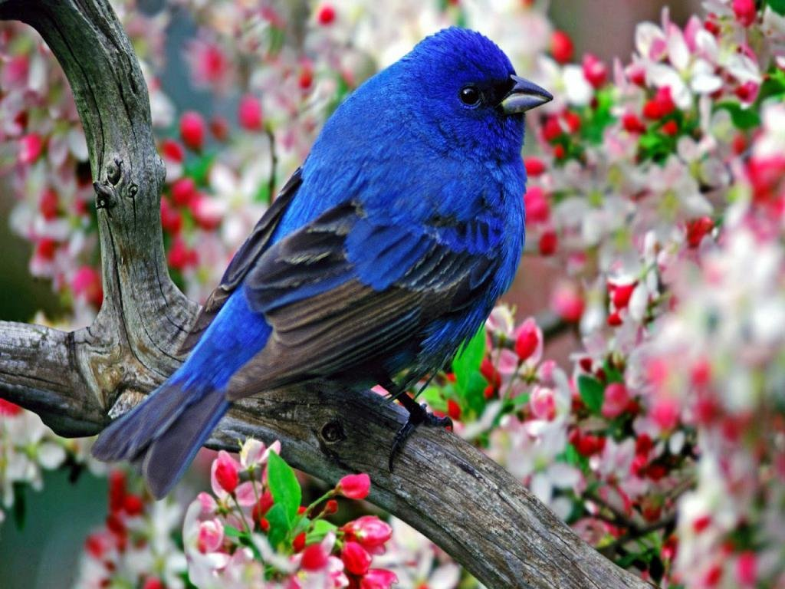

Silaja
@sailu
i love good punmanship
Bangalore
Joined February 2011
141 photos and videos

Tweets
Tweets and replies
Silaja
@sailu
.5h
Because Lords od the Rings. #LOTR
2
3
View more photos and Videos
Silaja
@sailu
.5h
What Language do they speak in Bangalore?
C++
C++
Silaja
@sailu
.5h
Planning to start a group called teetotalers
Club.
Bring Your own Bisleri.
Club.
Bring Your own Bisleri.
Who to follow.
Refresh.
viewall

Simon Helberg @sim...
x
Sunidhi chauhan @s...
x

The Big Bang Theory @sim...
x
Trends..change
#HappyBirthdayPM
#worldFekuday
#bypollresults
#Modifailstest
#IncredibleASUS
Dortmund
Arsenal
Wenger
Immobile
Basel
#worldFekuday
#bypollresults
#Modifailstest
#IncredibleASUS
Dortmund
Arsenal
Wenger
Immobile
Basel